최신 판정: 이전 첫 회전·유지 통과는 접촉 계산10회 모델의 기록이다. 누락 접촉을 확인한 뒤 별도50회 모델에서 첫 회전을 다시 시험했고 기존 정책은4118목표에서 중단됐다. 같은4118명령의50/100회 최종 상태는 일치한다. 기존 SAC 보정과 새 초기 배치 검증은 최신 접촉 계산·정책 검토를 따른다. 전체 동작의 실물 준비 완료가 아니다.
모든 그림과 성공 판정은 저장 모델의 오프라인 결과다. 실물 모터·카메라는 열지 않았다. 첫 회전·유지의 확인된 조건과 미학습 배치/마찰 및 다음 회전의 미달을 구분한다. 원래 실물 실행 파일170개는 유지한다.
기존 접촉 계산10회 모델: 끝 보정과 위치 유지 연결 기록
아래 세 조건의 첫 회전 성공은 기존10회 모델의 기록이며50회 모델의 성공으로 이전하지 않는다. 초기 배치→기준 궤적과 SAC 잔차6300목표→별도 신경망 보정→위치 지령 유지, 총6556목표를 세 조건에서 처음부터 새로 실행했다. 중간 손·큐브 상태 초기화와 끝 보정의 저장 교사 관절 경로 재생은 없다. 끝 보정은303개 모델 교사 자료를 모방 학습한 부품이며 SAC가 아니다. 세 조건이 교사 자료에도 쓰였으므로 독립 일반화 성공률로 해석하지 않는다.
윗단 인증과 하부 접촉은 마지막4050개1ms 상태다. 양 손끝 각각 모델 법선력0.2N 초과를 하부 접촉으로 센다. 이 힘과 형상 인증은 실물 하중·치수의 측정값이 아니다. X+0.5mm의 절단 단면/방사 지표0.141mm와 독립 분리면 인증 하한0.313mm는 다른 계산이다. 빠른 단면 지표는 원통 끝면 주변의 전체 최소거리 하한이 아니므로0.3mm 여유 증명으로 쓰지 않는다. 인증에는 정확한 원통 지지 함수를 다시 검사했으며 형상과0.3mm 기준은 바꾸지 않았다.
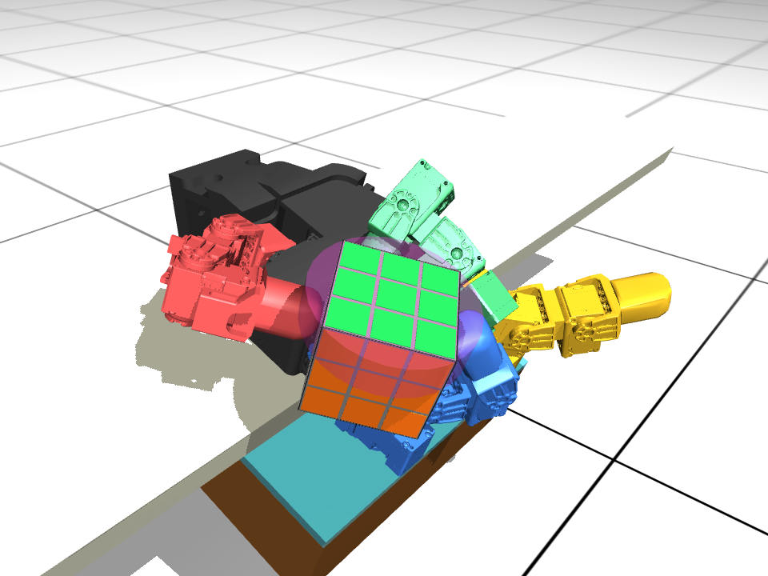
학습 보정 후 위치 유지. 토크를 끈 자세가 아니며 모델의 원래 위치 서보가 동작한다.
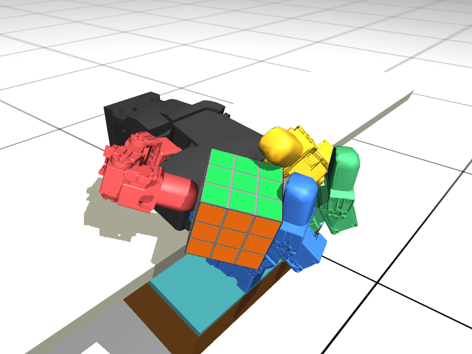
검지·중지를 함께 옮겨 약지 접촉을 만든 정적 기하 후보. 도달 동작·지지력·다음 회전의 성공 자세가 아니다.
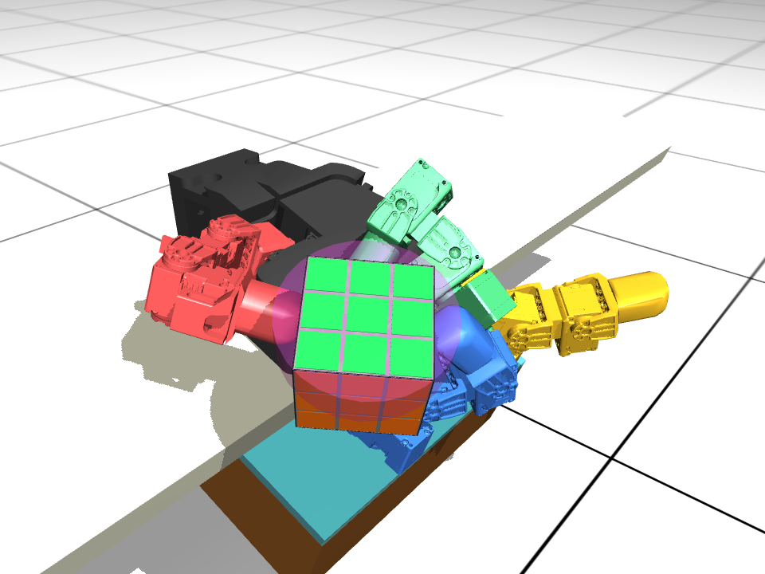
학습 보정 뒤 파지에서 다음180도 목표를 시도한 중단 상태. 추가 회전 약4도 부근에서 정체됐고 위치도 벗어났다.
약지가 큐브에 닿을 수 없다는 문제가 아니다. 손가락 사이를 통과하는 우회 경로는 찾았지만, 검지를 움직여 약지에 하중을 넘기는 동안 큐브 지지가 풀렸다. 힘 피드백을 포함한 전환 비교도 약지의 안정적 지지 인계까지 통과하지 못했다. 다음90도 및 회전→유지→다음 회전→유지 전체는 미완료다.
단계 연결부의 추가 검증
모터 출력 API가 없는 NumPy 연결부가 세 조건의19668개 목표와 전부 일치했다. 신선한 공간 근거, 모델 해시·표본 번호, 확인 응답 오류의 단계 유지, 유지 지령 보존을 검사했다. 이 비교에는 모델의 소수 틱 관측을 썼으며 실제 인코더·카메라 정확도 검증은 아니다.
정수 인코더 조건의 개선: 원래 관절 범위 안의 가장 가까운 증분 목표를 선택하는 변형은 초기 배치부터6956목표를 통과했다. v2 보정 부품의 최종 자세 오차1.369도, 위치 오차1.498mm, 마지막4050상태 하부 접촉100%, 원통 공간 인증 하한0.572mm였다. 위치 유지 전환 뒤 약41초를 이어갔다. 정수 오차를 반영한v3 학습만으로는 미달이 해결되지 않았고 범위 안 목표 선택과 함께 비교했다. 동일 명목 조건의 변형·재확인을 독립적인 성공 조건으로 합산하지 않는다.
Y+0.5mm 배치는 목표 각도와 위치가 맞아도 공간 인증이 미달했다. 독립적인 최근접점·지지 함수 확인에서 끝 상태의 검지 끝과 원통 사이 거리는0.258744mm로0.3mm보다 작았다. 큰 빠른 지표값을 근거로 통과시키지 않았다. 거리 확인 근거.
검지 뿌리의 무게 지지를 검산하고, 약지·엄지·검지 뿌리로 유지할 수 있는 모델 끝 자세3개를 따로 확인했다. 그 자세로 직접 초기화한 검사와 첫 파지에서 이동한 검사는 구분한다. 현재 첫 회전 뒤 새 경로1265목표는 큐브를 놓치지 않고 진행했지만 방향 오차15.94도와 약지 힘 부족으로 미달이다. 실제 끝 상태를 이어 자세·접촉 보정과 하중이 생긴 순간의 위치 유지, 모델 중력 보정을 비교했다. 다음90도 및 실물 준비 완료는 아니다.
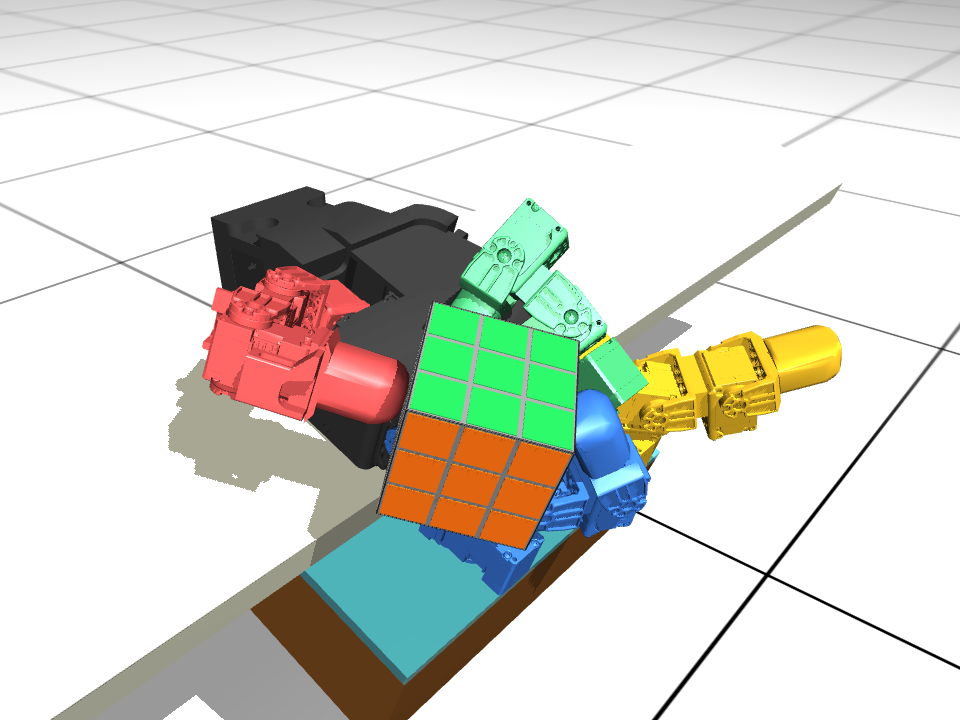
기존10회 모델의 정수 관측 첫 회전·유지 끝. 실물 사진이 아니다.
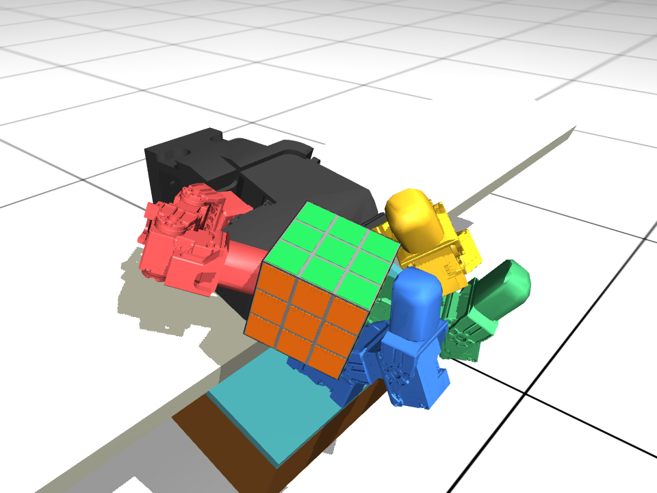
기존10회 모델에서 새 경로1265목표의 자유 동역학 끝. 큐브는 남았지만 약지 하중 인계와 방향이 미달이다.
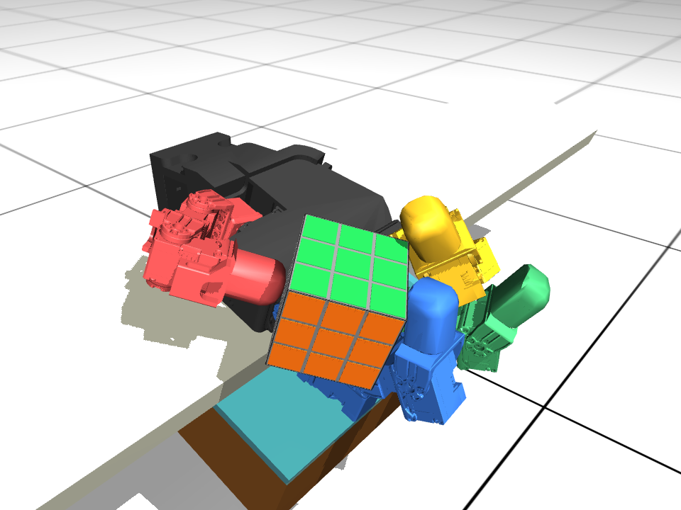
직접 초기화한 뒤 약지 지지를 유지한 별도 모델 끝 자세. 이 자세까지 이동했다는 결과가 아니다.
7회 합계90,000스텝의 요청 학습 분량을 완료했다. 실제 trainer의 묶음 진행 번호는 각 progress.json에 남겼다. 후속 모방 학습의 최적화 횟수를 SAC 환경 스텝에 더하지 않는다. 학습량을 성공률이나 완성도로 환산하지 않는다. 최종 체크포인트가 중간 체크포인트보다 나빠진 결과도 보존했고 자동 채택하지 않았다.
sac_ccd50_early_recovery_10k: SAC 10,000스텝 완료. 학습 기록
sac_ccd50_recovery_long_10k: SAC 10,000스텝 완료. 학습 기록
기존 actor에서 이어 학습한10256체크포인트는 현재 모델의 한 명목 조건에서 초기 배치부터6300목표를 연결했다. 약85.40도 회전, 전체 자세 오차4.78도, 기울기1.66도다. 마지막4.05초의 하부 손끝 접촉은92.5%, 공간 지표는 약1.94mm였다. 같은 조건에서 모든1ms 상태의 분리 공간 인증도 통과했다. 반복성이나 실물 성공을 뜻하지 않는다.
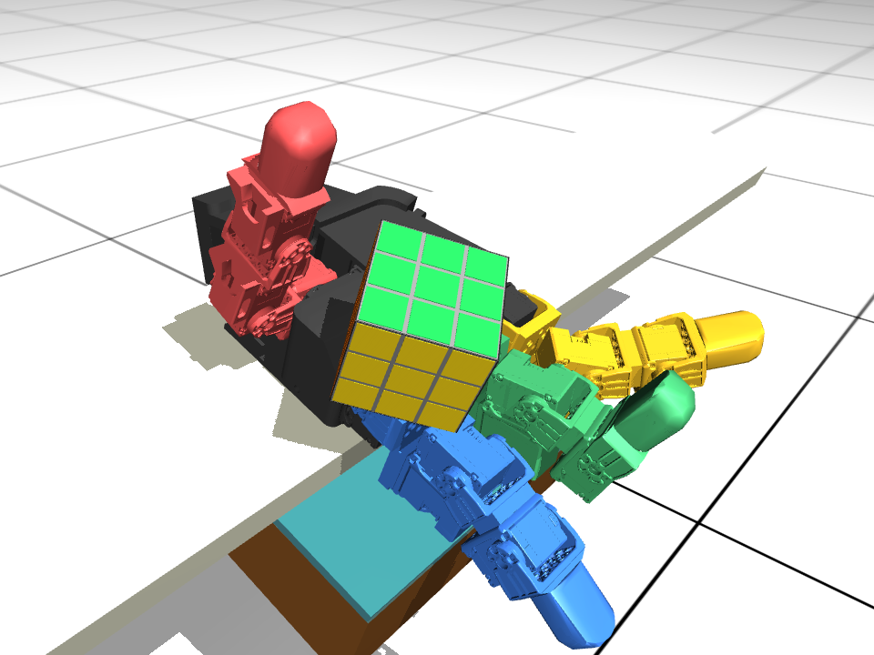
모델 출발 자세. 실제 손·사진이 아니다.SAC10256의 명목 회전·유지 끝 상태. 분홍 원통은 윗단90도 회전에 필요한 공간의 표시다.
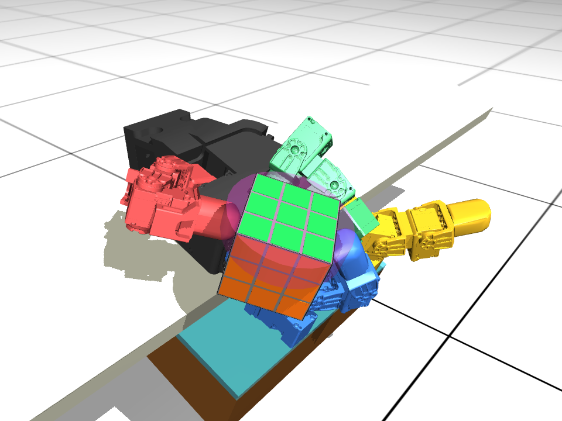
학습을 더 진행한20000체크포인트는 손끝과 윗단 공간 조건을 함께 만족하지 못했다. 최종 체크포인트를 자동 채택하지 않는다.
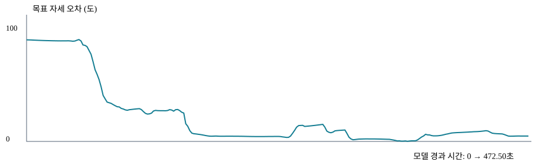
현재 목표 간격은 최대2틱, 주기는75ms다. 입력과 모델의 시간 조건을 맞춘 새 보정 학습을 실제 실행했다. 학습의 짧은 상태 창과 이 표의 전체 연속 경로는 다른 평가다. 모델의0.15N·m는450mA 환산값이 아니다.
동일 명목 조건을 인증을 위해 재실행한 횟수를 독립적인 성공 조건으로 합산하지 않는다. 표의 배치/마찰/구동/관측 오차는 가정한 모델 조건이며 실물 허용 오차를 측정한 값이 아니다.
다음 회전
고정된 두 접촉점을 유지하는 다음90도 제안은 통과하지 못했다. 접촉을 바꾸는 SAC 교육 단계를 별도로 시험하며, 아래 작은 각도의 결과를 다음90도 성공으로 표시하지 않는다.
sac_next_fractional5_10k / 000000010000: 5도 교육 단계, 목표 오차 8.842도, 미달. 두 번째90도 성공은 아니다.
sac_next_turn5_10k / 000000005256: 5도 교육 단계, 목표 오차 4.493도, 미달. 두 번째90도 성공은 아니다.
sac_next_turn5_10k / 000000010000: 5도 교육 단계, 목표 오차 4.874도, 미달. 두 번째90도 성공은 아니다.
처음부터 연결한 모델 교사 보정과 다음90도
초기 배치부터 SAC를 새로 추론한 뒤 저장된 모델 교사109목표를 연결했다. 중간 상태를 초기화하지 않았다. 전체 회전 90.021도, 목표 자세 오차 0.657도, 기울기 0.655도, 공통 파지 위치 오차 1.087mm다. 마지막4.05초의 매1ms 공간 인증을 포함한 판정은 통과이다. 이후 관절 경로를 거꾸로 재생한 비교도 수행했다. 이는 학습 정책이 아니며 다음 회전 성공으로 세지 않는다. 종료 사유: ['cube_translation_over80mm']. 연속 검증
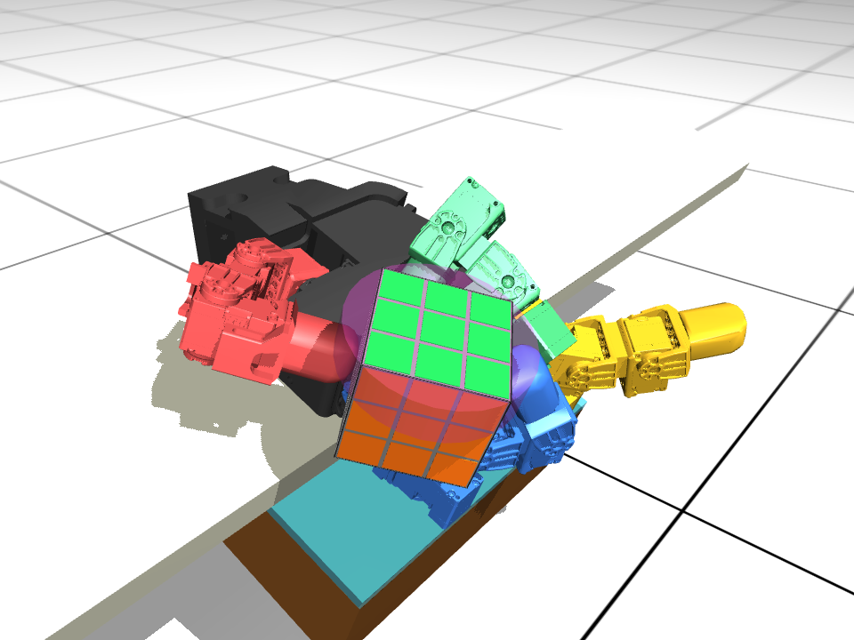
첫 회전 뒤 모델 교사 보정을 연결한 상태. 저장 교사 목표를 재생한 부분은 SAC로 세지 않는다.
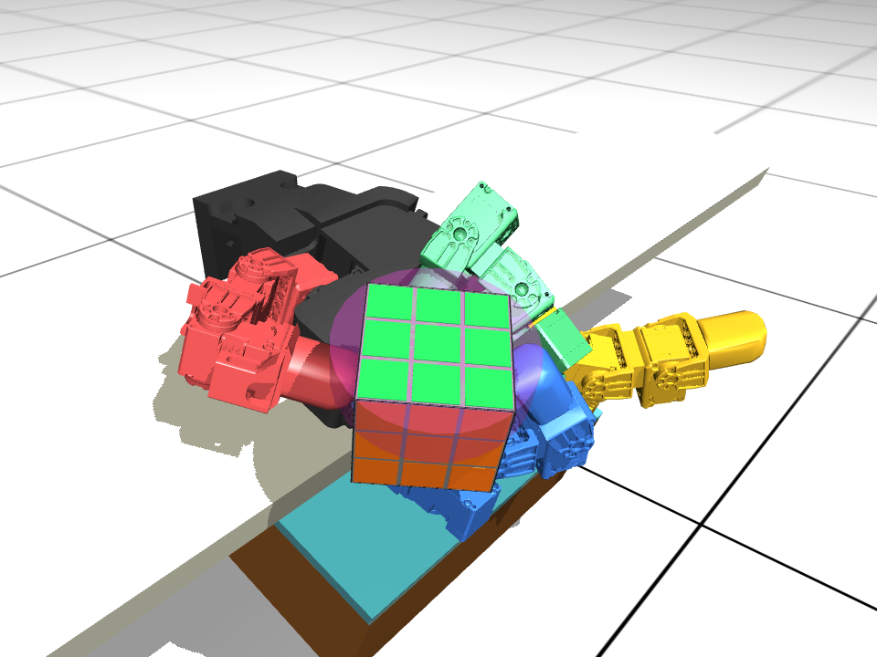
다음90도 모델 예측 탐색의 중단 상태. 첫 회전 뒤 파지에서 목표180도까지 도달하지 못했다.
next_model_feedback_0_transport_toward_ring5: 목표 0도, 최종 자세 오차 0.113도, 미달. SAC가 아닌 오프라인 모델 예측 제어. 근거
next_model_feedback_5: 목표 5도, 최종 자세 오차 1.329도, 미달. SAC가 아닌 오프라인 모델 예측 제어. 근거
next_model_feedback_5_all_fingers: 목표 5도, 최종 자세 오차 0.812도, 조건 통과. SAC가 아닌 오프라인 모델 예측 제어. 근거
next_model_feedback_5_recover_friction025: 목표 5도, 최종 자세 오차 0.308도, 조건 통과. SAC가 아닌 오프라인 모델 예측 제어. 근거
next_model_feedback_5_recover_long_friction025: 목표 5도, 최종 자세 오차 0.043도, 조건 통과. SAC가 아닌 오프라인 모델 예측 제어. 근거
next_model_feedback_5_recover_long_nominal: 목표 5도, 최종 자세 오차 0.092도, 미달. SAC가 아닌 오프라인 모델 예측 제어. 근거
next_model_feedback_5_recover_long_nominal_center15: 목표 5도, 최종 자세 오차 0.488도, 조건 통과. SAC가 아닌 오프라인 모델 예측 제어. 근거
next_model_feedback_5_recover_long_x_plus05: 목표 5도, 최종 자세 오차 0.022도, 조건 통과. SAC가 아닌 오프라인 모델 예측 제어. 근거
next_model_feedback_5_recover_x_plus05: 목표 5도, 최종 자세 오차 0.469도, 조건 통과. SAC가 아닌 오프라인 모델 예측 제어. 근거
next_model_feedback_90_from_student_hold: 목표 90도, 최종 자세 오차 86.263도, 미달. SAC가 아닌 오프라인 모델 예측 제어. 근거
next_model_feedback_90_proposed_ring_endpoint: 목표 90도, 최종 자세 오차 99.838도, 미달. SAC가 아닌 오프라인 모델 예측 제어. 근거
next_model_feedback_90_second_quarter: 목표 90도, 최종 자세 오차 85.272도, 미달. SAC가 아닌 오프라인 모델 예측 제어. 근거
next_model_feedback_90_transition_regrasp: 목표 90도, 최종 자세 오차 84.493도, 미달. SAC가 아닌 오프라인 모델 예측 제어. 근거
앞선 약지270개와 중지270개의 제한된 추가 지지 탐색에서는 후보를 찾지 못했다. 이후 다른 손가락을 함께 움직이는 정적 후보와 우회 경로는 위 후속 기록에서 추가로 찾았지만 하중 인계는 아직 통과하지 못했다. 이동 중 윗단 공간을 비우는 조건과 최종 유지 자세의 조건도 구분해 비교했다.
실물 출력 없는 연결 준비
별도 NumPy shadow 연결부의14개 검사가 통과했다. 현재 모터 대응, 학습 손바닥 기준점, 입력 신선도, 전송 확인 전 단계 유지와 파지 유지 중 계속 갱신을 검사했다. 실물 카메라 등록과 다음 회전은 미인증이어서 물리 실행은 허용하지 않는다. NumPy 이식은 증류가 아니다.
저장 실물 자료로 확인한 범위
빈손550개 기록에서 지령과 인코더 응답 지연을 비교했다. 전류를 토크로 환산하거나 힘 한도를 보정한 결과가 아니다. 저장 사진2,275장의 마커를 검사했으며 실제 파지 중에는 손 기준 마커가 확보되지 않았다. 고정 카메라 등록을 재사용할 수 있는지는 미검증이며, 가림만으로 실시간 제어가 불가능하다고 판정하지 않는다.
기존 내부 보정3개와 손 등록 자료도 읽었다. 손 마커의 모델 등록은 미검증으로 남아 있고, 옛 anchor 코드의 ID41=30mm 등은 최근 인계의 약27mm와 달랐다. 내부 보정 파일의 존재를 현재 카메라와 정책 좌표계의 등록 완료로 해석하지 않는다.